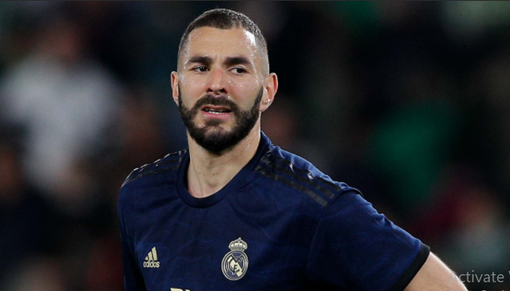

|  |
Karim BenzemaKarim Mostafa Benzema (French pronunciation: [kaʁim bɛnzema]; born December 19, 1987) is a French footballer who plays as a central striker for Real Madrid in the Spanish League and the France national team. Benzema is known for his aerobic abilities, high work rate, game industry and good finishing. Benzema is considered one of the best strikers in world football. |
|---|